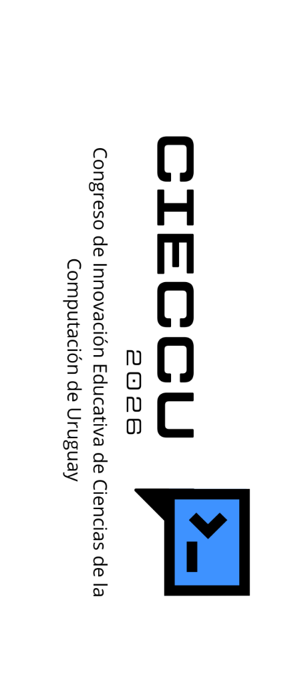

Nuestras Ediciones del Congreso
Explora los ponentes, ejes temáticos, recursos de docentes colaboradores y galerías de fotos del evento anual que define el rumbo de la educación en Ciencias de la Computación en Uruguay.
Ponentes Destacados CIECCU 2025
Dra. Claudia de los Santos
Investigadora en Didáctica de la Computación
Presentó la conferencia plenaria: "Pensamiento Computacional en Educación Primaria y Media: Estrategias Metodológicas Reales".
Mag. Santiago Vilar
Especialista en Tecnologías Educativas
Disertó sobre: "La Inteligencia Artificial generativa como asistente del docente: desafíos, sesgos y oportunidades éticas".
Ing. Andrés Rivas
Consultor en Ciberseguridad Escolar
Dirigió la mesa redonda: "Ciudadanía Digital y Protección de Datos: Construyendo hábitos seguros en la Red desde el aula".
Ejes Temáticos del Congreso 2025
Pensamiento Computacional
Abstracción, descomposición, reconocimiento de patrones y algoritmos aplicados al currículo.
Robótica y Sensores
Proyectos físicos interactivos utilizando placas controladoras y software educativo.
Ciberseguridad y Ética
Formación de ciudadanos digitales conscientes, protección de identidad y seguridad de datos.
Didáctica y Evaluación
Rúbricas de evaluación en proyectos informáticos y metodologías activas de aprendizaje.
Invitados Especiales y Autoridades 2025
-
AN
Representantes del Consejo Directivo Central (CODICEN)
Acompañaron la sesión inaugural resaltando la importancia del marco curricular.
-
UD
Docentes Académicos de la Universidad de la República (UdelaR)
Participaron de los paneles de debate sobre la vinculación de informática con el nivel superior.
-
CE
Mentores de Plan Ceibal
Estuvieron a cargo del stand interactivo de placas micro:bit y recursos didácticos digitales.
Presentaciones de Docentes Colaboradores 2025
Desliza para ver los recursos y presiona el botón para descargarlos directamente.
Enfoque Lúdico de Pilas Bloques en el Aula
Secuencias didácticas diseñadas para introducir bucles y condicionales en el aula de informática escolar.
Automatización y Sensores con Placas micro:bit
Proyectos prácticos de control de temperatura y luminosidad diseñados con lógica de programación de bloques.
Huella Digital en Adolescentes y Talleres de Prevención
Materiales didácticos y encuestas interactivas de diagnóstico sobre privacidad digital en redes sociales escolares.
Modelado de Sistemas con PSeInt en el Nivel Medio
Planificaciones y ejemplos de algoritmos sencillos para resolver problemas de lógica matemática de forma guiada.
Más Presentaciones y Recursos 2025
Existen múltiples trabajos y planificaciones adicionales de docentes colaboradores. Explora la carpeta pública completa en Drive.
Registro Fotográfico del Evento 2025
CIECCU 2026
Congreso llevado a cabo de forma exitosa los días 26 y 27 de marzo de 2026 en el Auditorio Mario Benedetti de la Torre de las Telecomunicaciones, Montevideo.

Expositores Expertos CIECCU 2026
Aníbal Gonda
Representante de CUTI
Disertó en la conferencia de apertura: "Inteligencia Artificial", analizando el impacto de los algoritmos inteligentes en el sector productivo y académico.
Claudio López
Docente de Universidad de Montevideo (UM)
Expuso en la sesión de la mañana: "Ciberseguridad", abordando las directrices clave para la prevención de riesgos y protección de datos en escuelas.
Alexia Aurrecochea
Estudiante de U Católica (UCUDAL)
Presentó en la sesión vespertina: "IA", mostrando una perspectiva aplicada de proyectos prácticos impulsados por jóvenes en educación superior.
André Kelbouscas
Docente de Universidad Tecnológica (UTEC)
Expuso en el bloque de cierre: "Robótica", describiendo metodologías activas y aplicaciones de automatización y hardware libre.
S. Hernández y D. Daluz
Equipo Técnico Docente de EDyTIC
Presentaron la ponencia especial: "App web ética de IA en Educación", mostrando una herramienta interactiva local para el aula.
A. Borges y V. Panella
Equipo de Contenidistas EDyTIC
Expusieron la: "Presentación de equipo EDyTIC", detallando las secuencias didácticas y el acompañamiento docente proyectado.
Ejes Temáticos del Congreso 2026
Innovación Curricular
Integración pedagógica y desarrollo de repositorios centralizados de recursos de Ciencias de la Computación.
Didáctica y Aulas Híbridas
Experiencias y metodologías de educación de informática a distancia, talleres híbridos y portales.
Inteligencia Artificial
Integración ética del aprendizaje automático, LLMs y sistemas inteligentes como recurso escolar.
Colaboración Profesional
El rol crítico de los docentes colaboradores, inspectores de informática y coordinadores.
Invitados Especiales e Instituciones Participantes 2026
Universidad Tecnológica
Participó activamente aportando ponentes en el eje de Robótica y automatización educativa.
Universidad de Montevideo
Aportó ponentes y marcos teóricos clave en la mesa temática de ciberseguridad escolar.
Cámara Uruguaya de TI
Disertó sobre tendencias y demandas en Inteligencia Artificial en el mercado nacional.
Universidad Católica
Participó con ponentes en el eje de inteligencia artificial aplicada y aprendizaje estudiantil.
Presentaciones de Docentes Colaboradores 2026
Desliza para ver los recursos del último congreso y accede directamente a Drive.
"Puentes lógicos"
Docentes: A. Espiga, L. Villalba
Propuesta práctica sobre compuertas lógicas y diseño de circuitos aplicados al aula de ciclo básico.
"Pensando en el otro"
Docentes: C. Linfa, F. Acosta
Experiencia integradora que vincula habilidades socioemocionales, empatía y pensamiento algorítmico.
"Agrobot"
Docente: A. Morales
Proyecto de automatización de cultivos a pequeña escala utilizando placas programables de código abierto.
"Robótica accesible y DUA"
Docente: M. Bentancor
Adaptaciones curriculares y físicas mediante robótica para garantizar el Diseño Universal de Aprendizaje.
"Microbit y Marte"
Docentes: K. Reynoso, B. Peculio
Simulación didáctica de recolección de datos y sensores ambientales emulando la exploración del planeta Marte.
"IA y Brindis por Pierrot"
Docente: P. de los Campos
Interesante integración entre música, literatura uruguaya y entrenamiento de modelos de IA generativa.
Más Presentaciones y Recursos 2026
Existen múltiples trabajos adicionales, secuencias didácticas y ponencias de docentes colaboradores. Explora el Drive completo.
Registro Fotográfico del Evento 2026
CIECCU 2027
Próximamente • En Definición
La tercera edición del Congreso de Innovación Educativa de Ciencias de la Computación de Uruguay se encuentra actualmente en fase de planificación y diseño de agenda. Estamos definiendo las fechas de realización, sede y la convocatoria formal para los docentes expositores.
¿Quieres proponer un eje temático o participar?
Puedes ponerte en contacto con el equipo de inspectores de informática y contenidistas de EDyTIC a través de nuestro canal de sugerencias oficial para proponer charlas, talleres o postular tu sede educativa.
Comité Organizador y Autoridades
Las autoridades de la Dirección General de Educación Secundaria y el equipo de EDyTIC que coordinan y dirigen las actividades de CIECCU.
Prof. Alexandra Suárez
Inspectora de Informática DGES • ANEP
Prof. Miriam Buero
Inspectora de Informática DGES • ANEP
Prof. Gustavo Farías
Contenidista de Informática DGES • EDyTIC
Prof. Santiago Hernández
Contenidista de Informática DGES • EDyTIC
Docentes Colaboradores
Agradecemos el valioso apoyo brindado por los docentes colaboradores que trabajaron activamente en el soporte y organización del congreso.
Edición 2026
Sebastián Apólito
Soporte técnico, acreditación y logística
Diego Daluz
Soporte técnico y transmisión por streaming
Pablo Acosta
Soporte técnico y logística en sala
Marcelo Marcediño
Soporte técnico y transmisión por streaming
Marcela Rodríguez
Acreditaciones y logística en sala
Edición 2025
Diego Daluz
Soporte técnico y transmisión por streaming
Otros Colaboradores...
Lista abierta a incorporaciones
¿Falta algún colaborador o deseas reportar una corrección?
Sabemos que hay más docentes que han prestado su valiosa ayuda. Si colaboraste en alguna edición o deseas reportar a alguien omitido, por favor utiliza nuestro formulario oficial de sugerencias o contáctanos para agregarlo de inmediato.